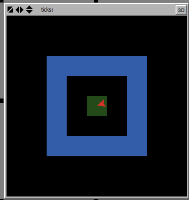

Analysis of the published model: Due date extended to next Sunday (Feb. 25)
max-one-of [ expected-utility ] patchesmax-one-of [ expected-utility ] neighborsmax-one-of [expected-utility ] patches in-radius 5max-one-of [ expected-utility ] my-social-networkcreate-link-from, create-link-to) or undirected (create-link-with)my-links, my-in-links, my-out-links
link-neighbors, out-link-neighbors, in-link-neighbors
Class_12 model in NetLogosetup and set up turtle 5Ask turtle 5 to identify all the patches that are exactly 2 patches away from the turtle’s patch (not a 2-patch radius from turtle-2)

neighbors primitive.member? primitive (member <agent> <agent-set>)patch-set primitive to turn an list of many patch-sets into a single patch-setask turtle 5 [
ask (patch-set [neighbors] of [neighbors] of self) with
[not member? self [(patch-set neighbors patch-here)] of myself]
[
set pcolor blue
]
]self refer to in patch-set [neighbors] of [neighbors] of self?self refer to in not member? self [(patch-set neighbors patch-here)] of myself?Put a slider on the interface and call it number-of-links
Edit the chooser for vision-mode to add links as an option.
Edit to initialize-turtle:
to initialize-turtle
move-to one-of patches with [ not any? turtles-here ]
set wealth 0
set size 0.8
color-turtle 1.0
create-links-to n-of number-of-links other turtles
endEdit to-report find-best-patch:
ifelse vision-mode = "radius"
[
set candidates (patches in-radius sense-radius) with [ not any? turtles-here ]
set candidates (patch-set candidates patch-here)
]
[
ifelse vision-mode = "neighbors"
[
set candidates neighbors with [ not any? turtles-here ]
set candidates (patch-set candidates patch-here)
]
[
ifelse vision-mode = "links"
[
set candidates neighbors with [ not any? turtles-here ]
set candidates (patch-set candidates patch-here)
set candidates (patch-set candidates ([neighbors with [not any? turtles-here]] of out-link-neighbors) )
]
[
error "Unknown vision-mode"
]
]
]Function: \[U = (W + PT) \times (1 - F)^T\]
W = wealth, P = profit, F = risk of failure, T = time horizon
How does this change as investors gain more wealth?
Interactive app https://alo.ees.vanderbilt.edu/shiny/ees4760/contour/
wealth-increase-thresholdMake a satisfice function:
to satisfice
; Move if expected wealth increase rate is below the threshold
; Potential destinations do NOT include the current patch
if expected-utility-of self < wealth * (1 + wealth-increase-threshold)
[
let potential-destinations neighbors with [not any? turtles-here]
if any? potential-destinations [ move-to one-of potential-destinations]
]
end